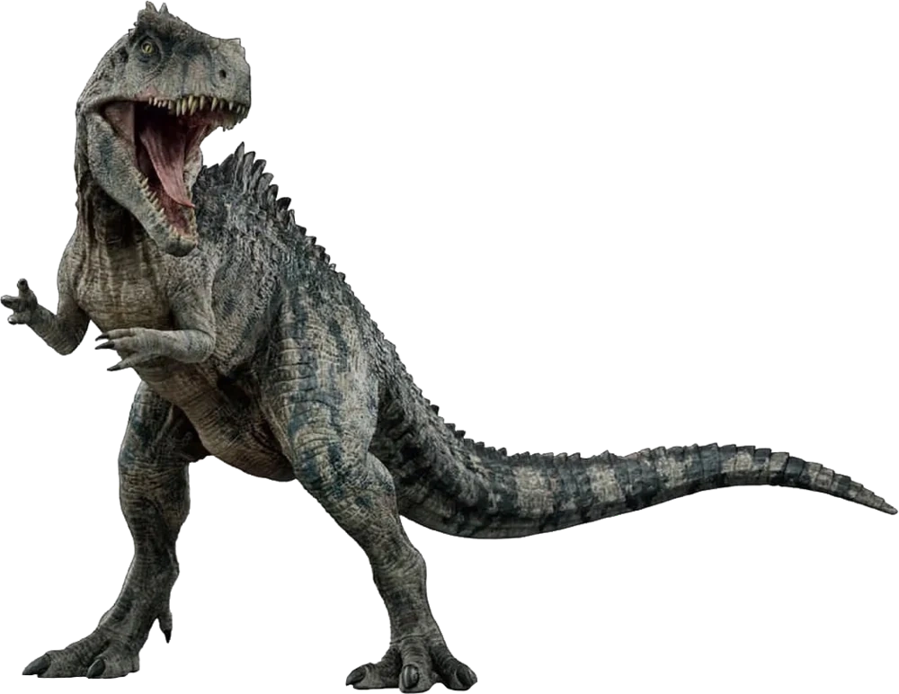

Subtítulo3
El Giganotosaurio fue uno de los depredadores terrestres más grandes que existieron en la historia de la Tierra. Vivió hace aproximadamente 97 millones de años, durante el período Cretácico, en lo que hoy es la región de la Patagonia argentina. Su nombre significa “lagarto gigante del sur”, y no es casual: podía superar los 12 metros de longitud y se estima que pesaba entre 6 y 8 toneladas. Pertenecía al grupo de los carcarodontosáuridos, un linaje de terópodos carnívoros que rivalizaban en tamaño con el famoso Tyrannosaurus rex, aunque estaban separados por millones de años y continentes diferentes. Su cráneo, alargado y robusto, estaba provisto de dientes serrados diseñados para desgarrar grandes presas, probablemente dinosaurios herbívoros gigantes como los titanosaurios. El hallazgo del Giganotosaurio en Argentina en 1993 significó un hito para la paleontología, ya que no solo reveló la magnitud de los depredadores sudamericanos, sino también la diversidad de ecosistemas que poblaron el hemisferio sur durante el Cretácico.
